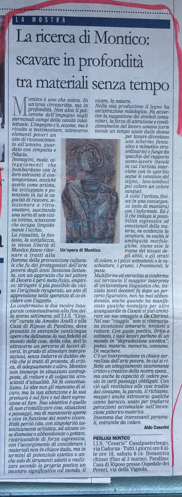
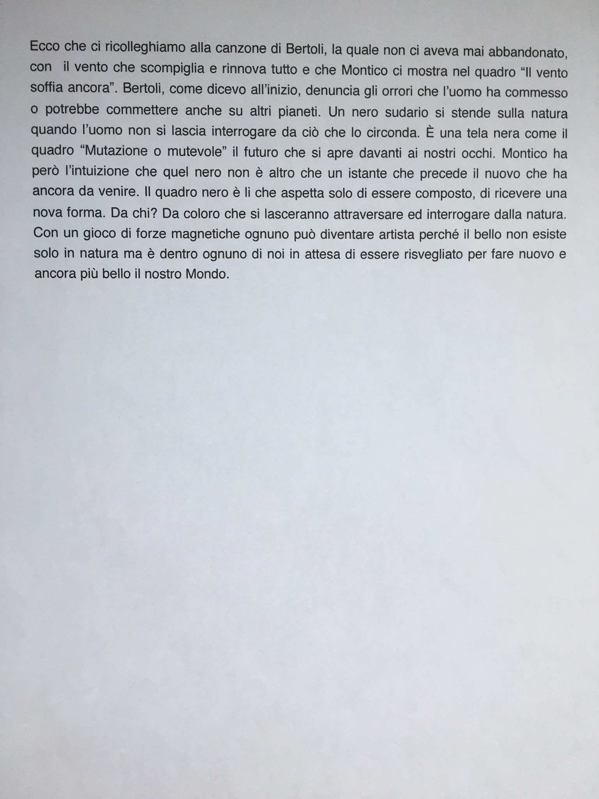

Books as primary sources
The website's critical structure is grounded in these source volumes, useful for readers, curators, and collectors.
PDF Library
Guido Oldani's review
From Art Through Artificial Intelligence - high resolution (preface).
Through Oldani's lens, Montico shows the threshold where nature absorbs contemporary artificial forms.
In this text, Guido Oldani (founder of Terminal Realism) reads Montico through three connected vectors: recovered materials, chromatic force, and image structures where natural and manufactured elements are interdependent rather than opposed. The review frames this method as a critical poetics of the present.
Source: Art Through Artificial Intelligence - high resolution (PDF).
Exhibitions documented in press reviews
The integrated transcription of reviews adds venue-level and date-level details that strengthen the public chronology of exhibitions.
Moneglia, 1972
Pro Loco Moneglia (Genoa), large collective of contemporary painters: June 15 - August 20, 1972.
Milan, 1973
Solo show at Galleria Il Vertice (Via Visconti di Modrone 29), April 12 - 29, 1973.
Milan, 1974
Centro Artistico Ramella (Via S. Vito 6): artistic season opened with a solo exhibition, January 18 - 31, 1974.
La Madonnetta, 1976
Press coverage of a solo exhibition at Galleria d'arte La Madonnetta (November 1976).
Villeurbanne, 1989
Salle des Gratte-Ciel: documented presence in the context of an international France-Italy event.
Lyon, 1991-1993
Galerie David (January 24 - March 11, 1991) and Istituto Culturale Italiano (December 9, 1992 - January 14, 1993).
Villa Barni, 2003
"La Villa Barni" exhibition, Roncadello di Dovera (Cremona), September 14, 2003.
Melegnano, 2011
Exhibition at "Il Telegrafo", November 26 - December 31, 2011.
Extended details have also been added to the Biography timeline.
Press reviews
Newspaper clippings and articles documenting Montico's public reception.




